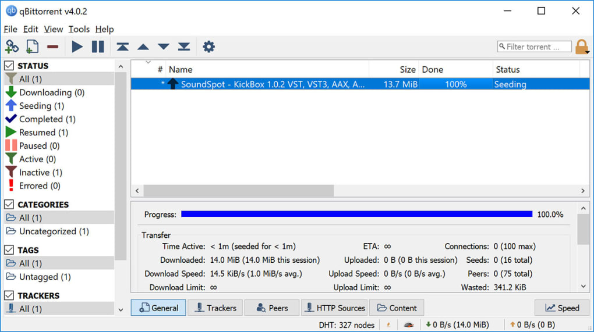

qBittorrent
Поделиться:
qBittorrent - бесплатный, мощный и удобный в работе кроссплатформенный клиент файлообменной сети BitTorrent. Несмотря на кажущуюся простоту, программа обладает внушительным набором весьма полезных возможностей,как например наличие интегрированной поисковой системы, расширяемой за счет плагинов, поддержка UPnP/NAT-PMP, встроенный менеджер ограничения скорости, фильтрация по IP, удаленное управление через веб-интерфейс, а также наличие опции последовательной закачки.

Возможности qBittorrent :
- Возможность создания торрентов
- Управление приоритетом и очередью закачки.
- Менеджер ограничения скорости.
- Встроенный планировщик.
- Удаленное управление через веб-интерфейс.
- Поддержка всех BitTorrent расширений.
- Расширенный контроль над трекерами, пирами и торрентами.

Операционные системы:
- Windows 7, 8.1, 10 (32/64-bit)